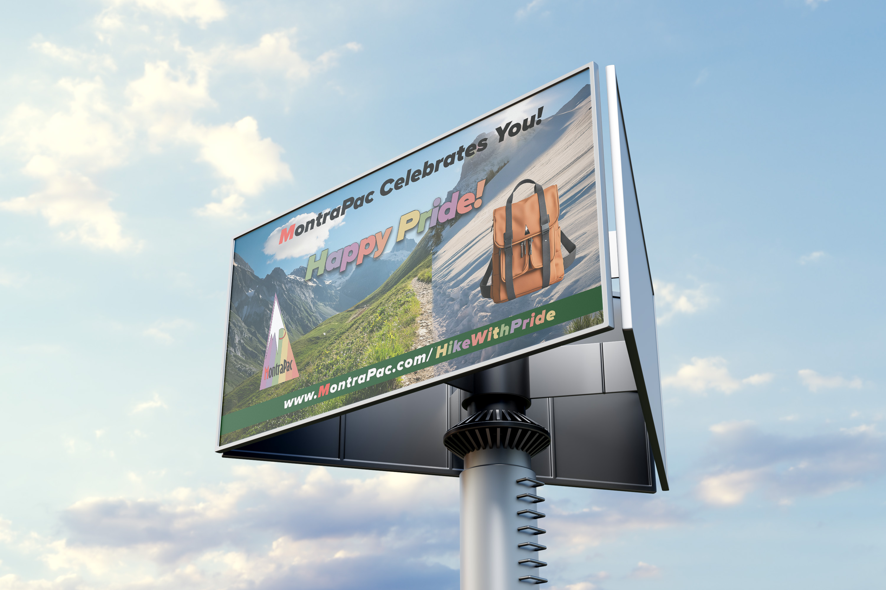
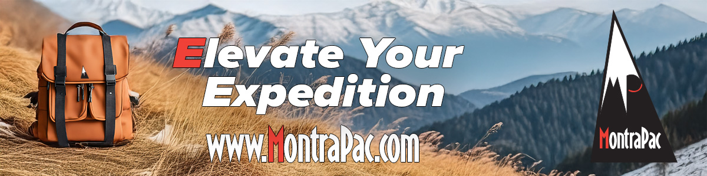
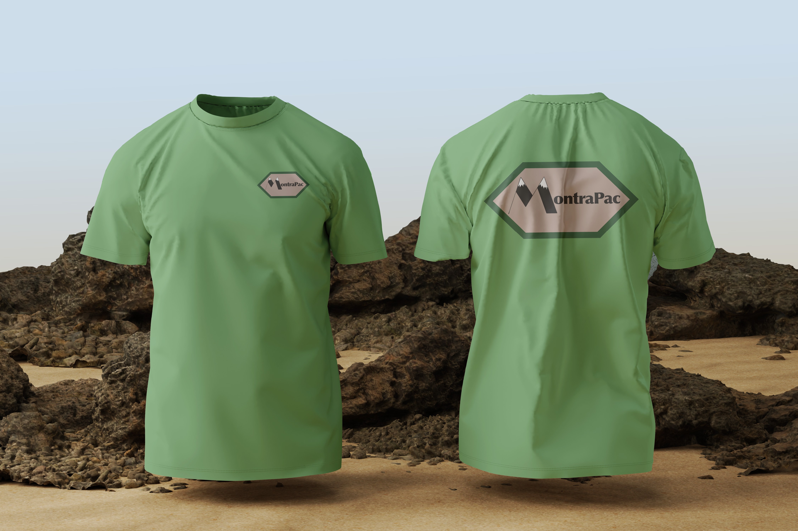
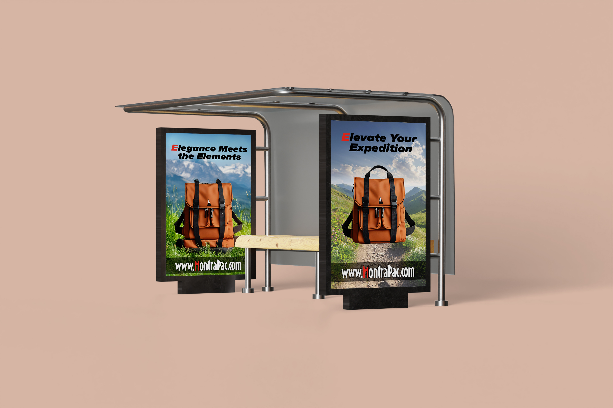
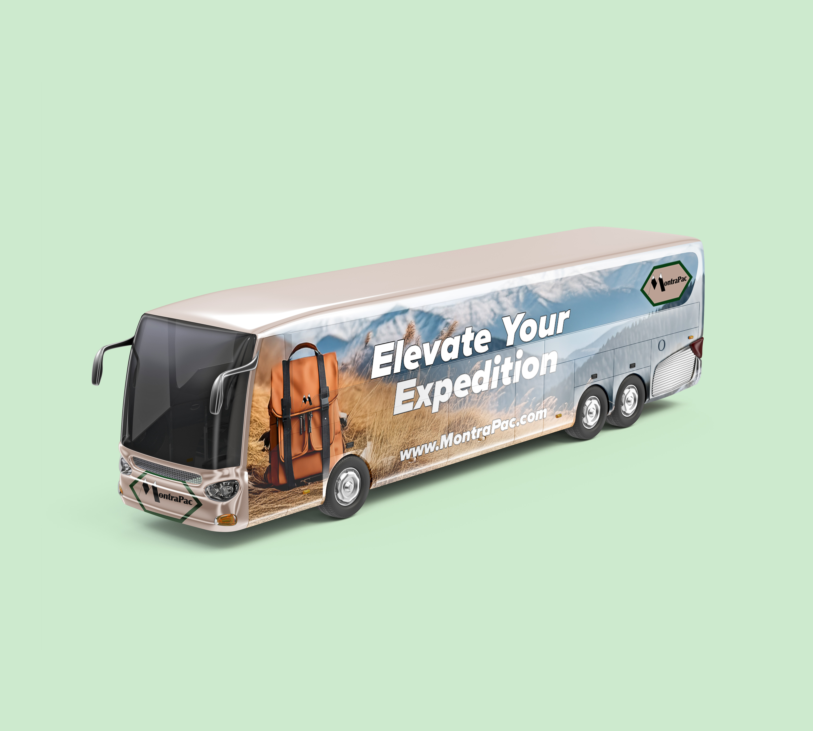
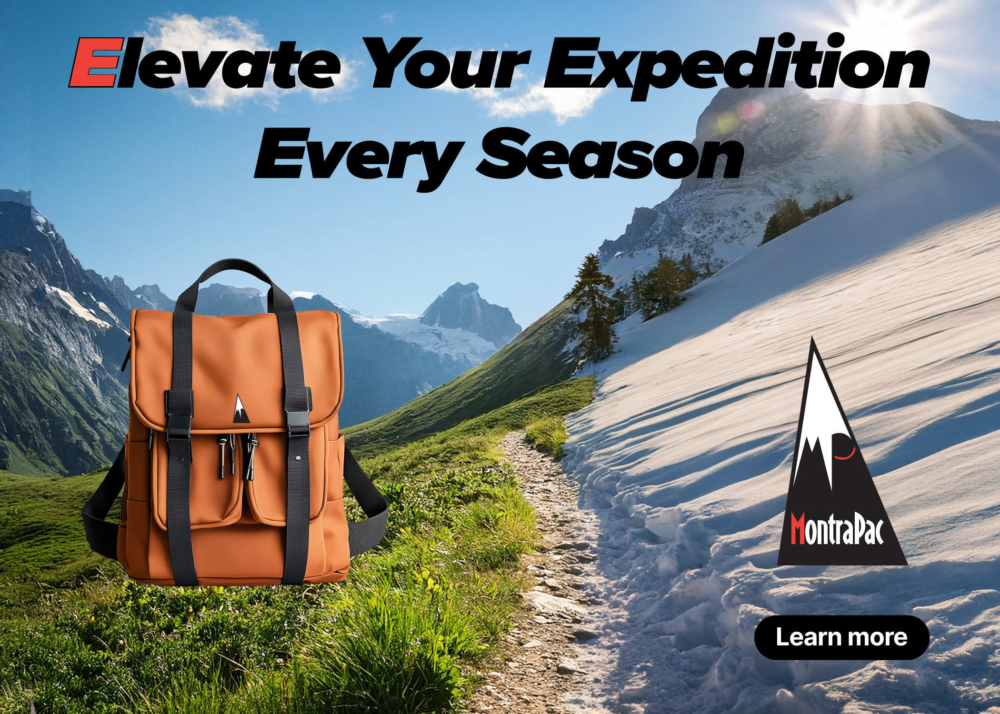
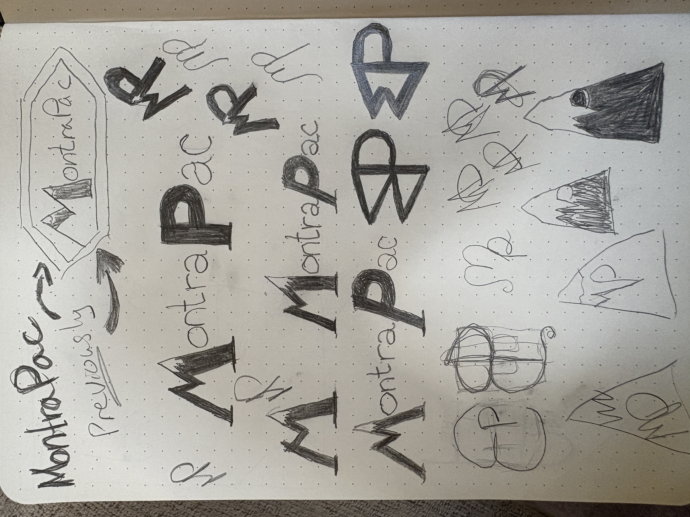
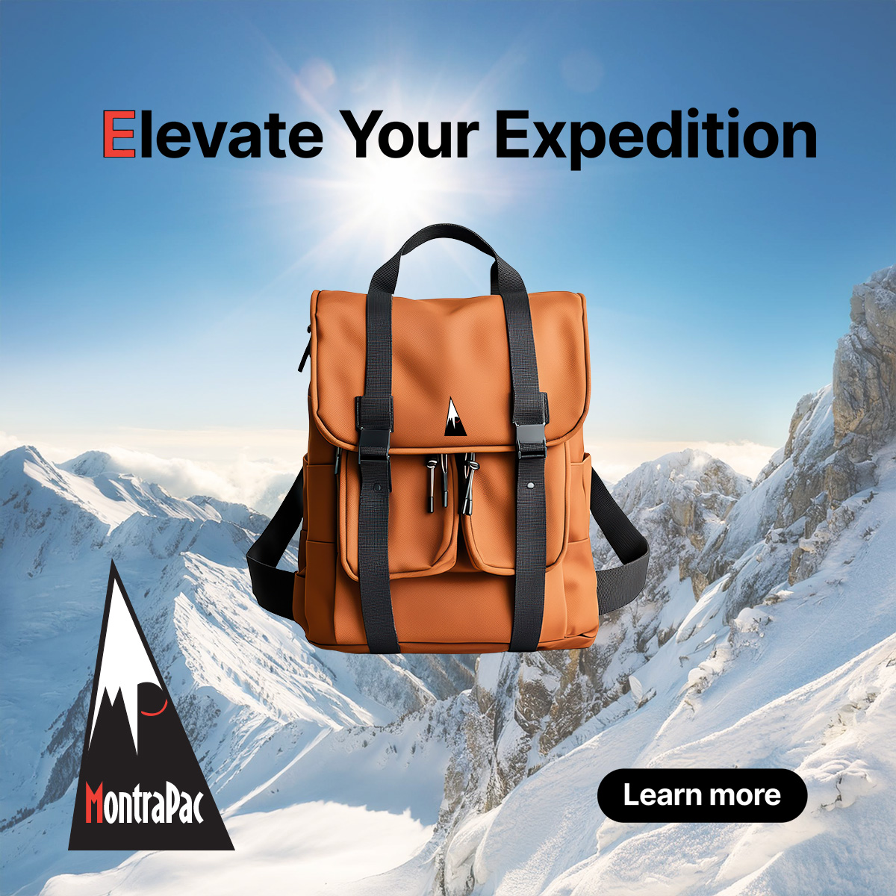

SOFTWARE
Adobe After Effects
Adobe InDesign
Adobe Illustrator
Adobe Photoshop
Adobe Premiere Pro
ROLE
Brand Identity Designer
Packing Designer
Marketing Designer
DELIVERABLES
Logo
Packaging
Marketing Materials
Brand Guidelines
TOOLS & CREDITS
Fictional brand — Adobe Certificate Program
Audio: "The Matrix" (1999) — Red Pill/Blue Pill dialogue excerpt
Envato Elements (licensed subscription assets & mockups)
PROJECT OVERVIEW
MontraPac is a conceptual outdoor lifestyle brand developed around the idea of exploration, adaptability, and finding balance beyond everyday routines. The brand identity was created to position the backpack as more than a functional product — instead, it represents the transition from daily obligations into outdoor experiences and personal discovery.
The project developed a complete brand system across environmental advertising, digital campaigns, apparel, and motion design. Each application was designed to create a recognizable outdoor identity that celebrates adventure across every season.
DESIGN APPROACH
The visual direction combines bold typography, immersive outdoor imagery, and seasonal storytelling to create a brand that feels energetic, inclusive, and adventure-driven. The identity was designed to adapt across multiple environments, from large-scale advertising placements to digital and lifestyle applications.
Through consistent branding, dynamic photography, and motion-based storytelling, MontraPac communicates a message of leaving behind routine and embracing new experiences wherever the journey leads.

A digital advertising concept designed to showcase the MontraPac backpack within an immersive outdoor environment. The warm landscape, mountain imagery, and seasonal elements reinforce the brand’s connection to exploration, durability, and adventure.

Apparel application exploring how the MontraPac identity extends beyond the backpack into lifestyle merchandise. The branded shirt design reinforces recognition while connecting the product with an active outdoor community.

Environmental advertising campaign created to bring the MontraPac identity into public spaces. The Pride-themed bus stop advertisements demonstrate how the brand system can adapt for seasonal campaigns while maintaining a consistent and recognizable visual presence.

Transit advertising application designed to transform everyday transportation into a mobile brand experience. The large-scale backpack imagery, outdoor photography, and bold composition create visibility while reinforcing MontraPac’s connection to adventure and exploration.

Digital campaign concept designed for social media engagement and seasonal storytelling. The advertisement highlights the MontraPac backpack through outdoor imagery and messaging focused on exploration, encouraging audiences to elevate their adventures throughout the year.

Screenshot showing completed file in Premiere Pro.

Early-stage branding exploration showing the evolution of the MontraPac identity through hand-drawn sketches and concept development. Multiple iterations explore mountain-inspired symbols, letterform variations, and visual directions centered around adventure, exploration, and outdoor performance. This process demonstrates the importance of experimentation, refinement, and visual problem-solving in developing a memorable brand mark.

A seasonal promotional advertisement designed for MontraPac, featuring an outdoor winter expedition theme. The composition combines a mountain landscape, product photography, bold typography, and high-contrast branding elements to create a sense of adventure and durability. The design emphasizes the backpack as the focal point while using a clean layout, dramatic lighting, and a strong call-to-action to communicate the brand’s adventurous identity.
A motion advertising concept exploring the contrast between the repetitive pace of modern work life and the freedom found through outdoor exploration. The video begins with fast-paced, fragmented scenes of workplace stress and constant movement before transitioning into slower, immersive moments of hiking, camping, and reconnecting with nature.
Inspired by the visual storytelling approach of The Matrix, the advertisement uses the idea of choosing between comfort and awareness as a metaphor for breaking away from routine and embracing adventure. The piece concludes with the MontraPac identity, reinforcing the brand message of discovering a different path.